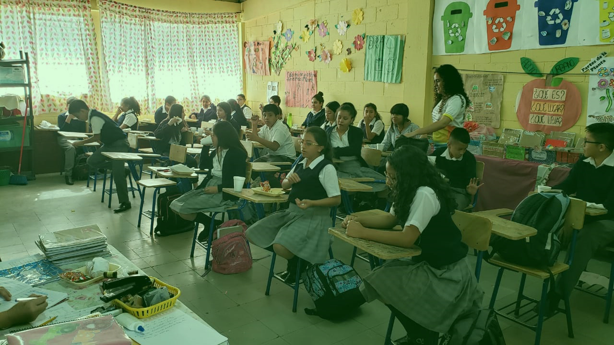
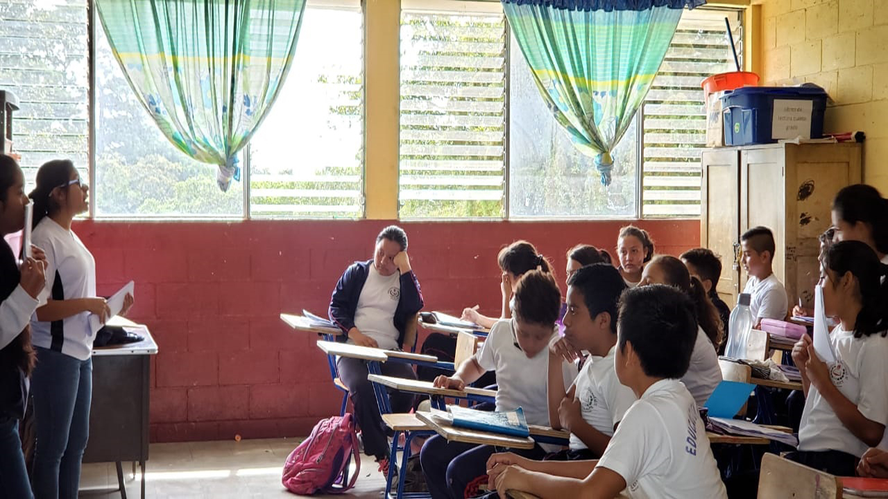

Justificamos el trabajo de investigación-acción, ya que creemos que fue necesario,
porque por medio del estudio que realizamos nos pudimos dar cuenta de las necesidades
que tienen las personas de distintas comunidades, como la educación impartida
incorrectamente y la diversidad de caracteres dentro de un salón.
Por lo ya mencionado muchos niños adquieren una educación en su mayoría
insatisfactoria y por la falta de recursos económicos que tiene las personas de esas
comunidades, no pueden enfrentar estos problemas de una buena manera, por lo cual
entramos en acción, apoyando por medio de charlas educativas donde les enseñamos
a aprender e implementar ideas para el progreso del desarrollo sostenible. Todo esto
lo llevamos a cabo con la finalidad de fomentar una cultura que al cuidar de su propia salud
cuide el de los demás.
